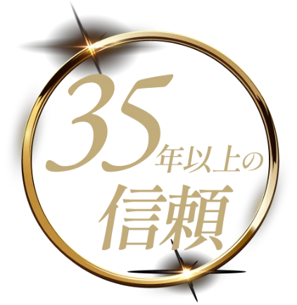
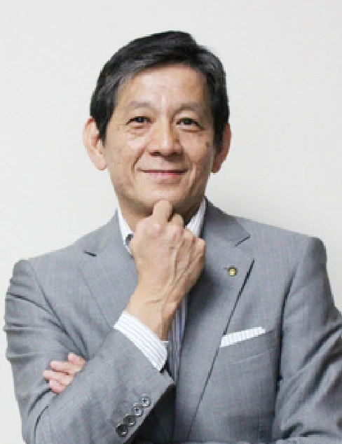
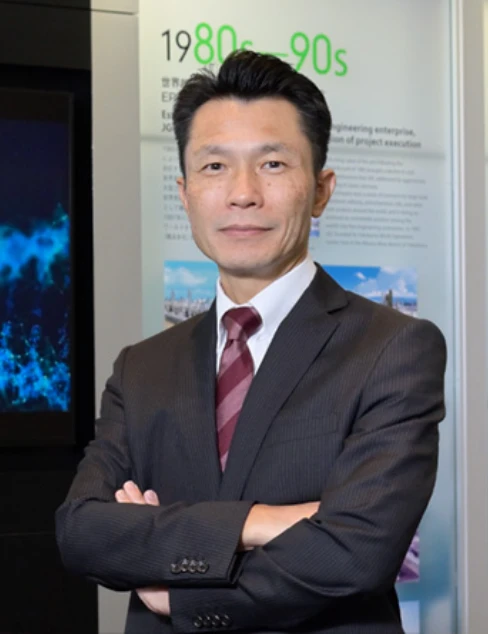
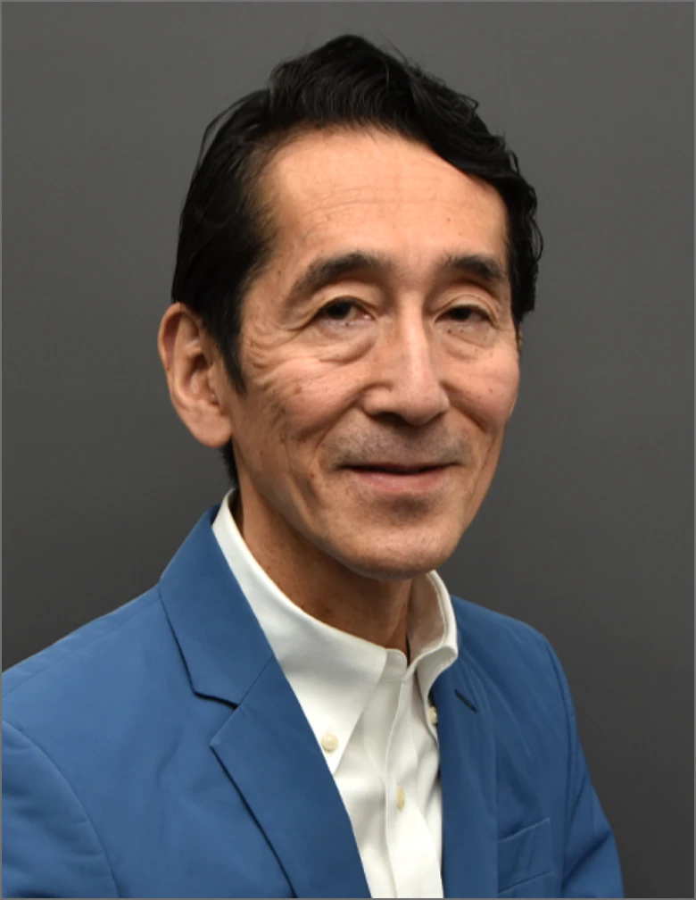

- Home
- Problem
- About EMC
- Voices
- Program
-
Report
インタビュー 第1回 開講レポート 第2回 開催レポート - About JMI
- Download
- Contact
CONTENTS
日本を牽引する
企業の経営層を育成してきた
実績ある次世代経営者研修

JMA エグゼクティブ・マネジメントコース
（EMC）
Problem Statement
優れた戦略や知識を身につけるだけでは、
経営者にはなれません。
事業責任者と経営者の間にある
大きな違いは何か？
経営者に求められるのは、
会社の枠を超えて世界を見渡し、
未来を構想し、意思決定する力。
そのためには、
企業の枠を越えた学びと対話を通じて、
自らの視座を問い直す経験が必要です。
JMI は、そのために生まれた
経営人材の覚醒の場です。
Value Proposition
EMC（Executive Management Course）は知識習得型の研修ではありません。
参加者自身の世界観を揺さぶり、
意思決定の基軸を根本から変容させる
3つの価値を提供します。
社会・産業構造を俯瞰し
戦略を構想する力
死生観、アート、歴史、哲学. 経営の実務からは遠いように見えるリベラルアーツを通じて、「世界観・歴史観・人間観」を獲得します。
経営の根幹となる「倫理観・哲学」を深め、人間としての器を広げます。
不確実な状況で
判断する力
多様な業種のトップランナーたちと、時間を忘れて膝詰めで徹底的に議論します。自分の常識が覆る経験を通じて、本当の意味での「多様性」を体感します。
自社の壁を越えた先にしか見えない景色がここにあります。
組織を率い
未来を切り拓く力
現地のリアルな空気に触れる合宿から、最終プログラムの「社長就任模擬演説」まで、修羅場を疑似体験します。
トップとしての覚悟を自らの言葉で語り尽くす訓練を行います。
経営者としての視座や意思決定力は、
短期間の研修で身につくものではありません。
EMCでは、約9ヶ月という時間をかけて
思考・対話・実践を繰り返します。
異業種のリーダーとの議論、
実践的なケース討議、
リベラルアーツによる視座の拡張。
そのプロセスを通じて、
参加者は自らの考え方や価値観を問い直し、
経営を“自分ごと”として捉える力を養います。
9ヶ月という時間は、
優秀な管理職が真の経営者へと
変わるための時間です。
Voices of Alumni

ヤマハ株式会社 取締役会長（当時 取締役 代表執行役社長）
中田 卓也 氏
日鉄ソリューションズ株式会社 代表取締役社長（当時 取締役常務執行役員）
玉置 和彦 氏
SCSK株式会社 産業・製造事業グループ統括本部長付（当時 製造事業グループ統括部長）
安藤 裕 氏
ニッセイアセットマネジメント株式会社 代表取締役社長（当時 株式会社ニチレイ 執行役員）
大櫛 顕也 氏

日揮グローバル株式会社 執行役員 エンジニアリング本部 本部長（当時 日揮株式会社（現 日揮グローバル） エンジニアリング本部）
茂野 義昭 氏
株式会社キッツ 取締役常務執行役員（当時 日本ゼオン株式会社）
河野 誠 氏
ブラザー工業株式会社 取締役副会長（当時 代表取締役社長）
佐々木 一郎 氏
株式会社竹中工務店 特別顧問（当時 代表取締役社長）
宮下 正裕 氏
Participating Companies
（法人格略、一部、会社名当時）※50音順
Program Director

IMD Professor of Innovation and Leadership
一橋大学 名誉教授
一橋大学社会学部卒業後、ミシガン大学経営大学院でPh.D.（経営学博士）を取得し、IMD（国際経営開発研究所）の日本人初の教授を務める。リーダーシップ、企業変革に関する教育・研究活動を進める一方、現在、日本ならびに海外の一流企業のリーダーシップ育成プロジェクト、コンサルティングに深くかかわる。
The Program
Executive Management Courseの9ヶ月は、4つのフェーズが有機的に連動し、参加者の変容を段階的に深めていきます。
知識の習得から始まり、実践、そして覚悟の醸成へと至る濃密なプロセスです。
一流の経営者や教授陣からの講義と多面的な解釈を引き出すディスカッション。リベラルアーツから地政学まで、経営のOSを更新するインプット
過去の現実の経営課題に対する意思決定シミュレーション。海外・国内のフィールドワークを通じた地政学リスクや危機管理の体感
未踏の社会課題に対し、チームで徹底的に考え抜くプロセス。構想力を鍛え上げ、「正解のない問い」に向き合う力を養う
極限の緊張の中で自身の志とやりたいことを語る「社長就任模擬演説」
経験豊富な経営者からの厳しい個別フィードバック
Field Report
プログラムの現場から、学びと対話の様子をお届けします。
失敗と危機に真剣に向き合い、
とことん自分をさらけ出す覚悟を持って臨んでください。
9ヵ月後、あなたは自らの言葉で会社を導くリーダーへと変わり、
間違いなく『生涯の戦友』を得ているはずです。
日本を代表する企業が選んできた経営人材育成プログラム。
まずはプログラムの詳細をご確認ください。
About JMI
JMI（JMAマネジメント・インスティチュート）は、21世紀を担う経営人材を育成するために設立された本格的な経営教育機関です。企業を取り巻く環境が急速に変化する中、従来の企業内教育や知識中心の研修だけでは、未来を切り拓く経営リーダーを育てることは難しくなっています。そうした課題意識から、企業の枠を越えた学びの場としてJMIは生まれました。JMIの教育は、単なる知識やスキルの習得ではなく、志・視座・実践力を磨き、人が変わることを重視します。ケース討議や異業種の優秀な人材との対話、実践的な学びを通じて、自ら考え、決断し、行動する力を養います。JMIは、企業の未来を担う中核人材を、変化の時代を率いる志ある経営リーダーへと育てる学びの場です。